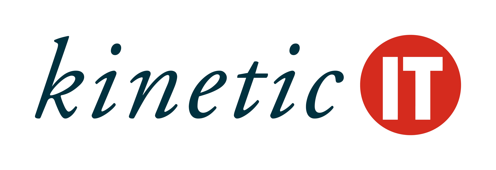

The interview that was setup was for an IT professional who works at Kinetic IT that has offices all over Australia. We interviewed Grant Nery who works in the Darwin Kinetic IT office. Grant gave us an insight to the work he does at Kinetic IT which are below. 
Grant works as a process manager for Kinetic IT which is an ICT service provider that is currently contracted by the Northern Territory Government to provide ICT services. His current role within Kinetic IT as a process manager, his title role is Service Asset Configuration Management (SACM). SACM is the management of all the data for the hardware, software and voice assets that are utilised by the Nothern Territory Government in all it’s agencies, departments and contracted service providers including Kinetic IT. Grant’s daily operational activities involve the processing of procurement requests for new hardware that has been purchased by NTG as well as requests to update the data of existing assets within the current tool set/database. He also does the Governance of and reporting on SACM related activities to management and the customer (NTG) which can occur on a monthly and quarterly basis.
Kinetic IT is a contracted service provider by the Northern Territory Government that provides ICT services, the primary activity being as a service/help desk that provides ICT support to customers over the phone and via email. The Kinetic IT service desk is the first point of contact for most ICT related enquiries, requests, and incidents. The Northern Territory Government also have contracts with other ICT service providers apart from Kinetic IT that provide other aspects of ICT support such as desktop and server management as well as network and voice/telecommunications support.
Grant’s current role focuses solely on the management of SACM and all its processes. Grant currently has no other activity or role withing Kinetic IT that he performs as the role of SACM manager is full time.
The other people that Grant primarily interacts with are other process managers who manage different processes to SACM. These processes are change management, problem management, knowledge management, continual service improvement and quality assurance. Grant also interacts with his immediate manager who is the end to end/service level manager for Kinetic IT and the contract manager.
Grant’s interactions with other IT professionals generally involve activities or other processes that involve SACM to some level. This is because other processes such as customer service, change management, problem management, quality assurance, knowledge management and continual service improvement tie in with SACM and vice versa. Interactions involve discussions or meetings either in person in a meeting room or via virtual means through an app such as MS Teams. Interactions also happen via email, phone calls or via record/tickets within the tool sets being utilised by the Northern Territory Government and its ICT contractors.
Interactions directly with the client (Northern Territory Government) and their users is very similar to the interaction with other IT professionals in that it almost always involves the SACM process to some level. These interactions though are mostly done via email or phone call. Physical or virtual meetings rarely ever occur unless a major change or incident occurs that affects the SACM process in some way.
Quality assurance and the checking of data are the aspects that Grant spends the most time on. Grant must ensure that the asset data being entered/updated in the tool set/database is as accurate and correct as possible. This is because it is one of Grant’s primary responsibilities of his role as a SACM manager. The other aspects that tend to take up a lot of time are investigations into data discrepancies/issues and incidents that are reported by my colleagues, members of other service providers as well as from the customer (Northern Territory Government).
Activities outside of operational tasks such as data investigations due to incidents, reporting on and governance of other service providers who perform SACM related tasks prove the most challenging in Grant’s current role. This is because these can take an enormous amount of time and focus to complete/resolve.
As SACM manager Grant generates reports on a monthly basis and provides them to the customer (Northern Territory Government). These reports contain information that helps them manage and maintain their fleet of hardware, software and voice assets. The information included in these reports identifies what type of hardware, software and voice services their agencies are using. Grant believe this to be a suitable example as it is the application of managing and sending information about hardware, software and telecommunications which are all components of IT.